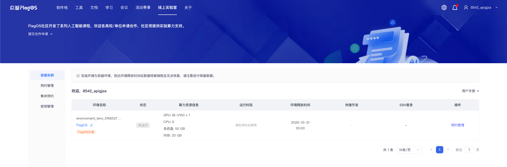
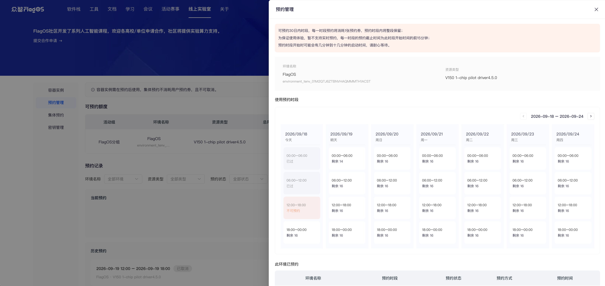
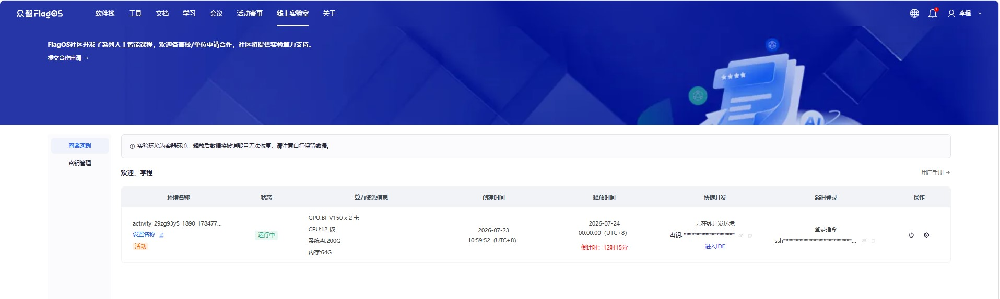
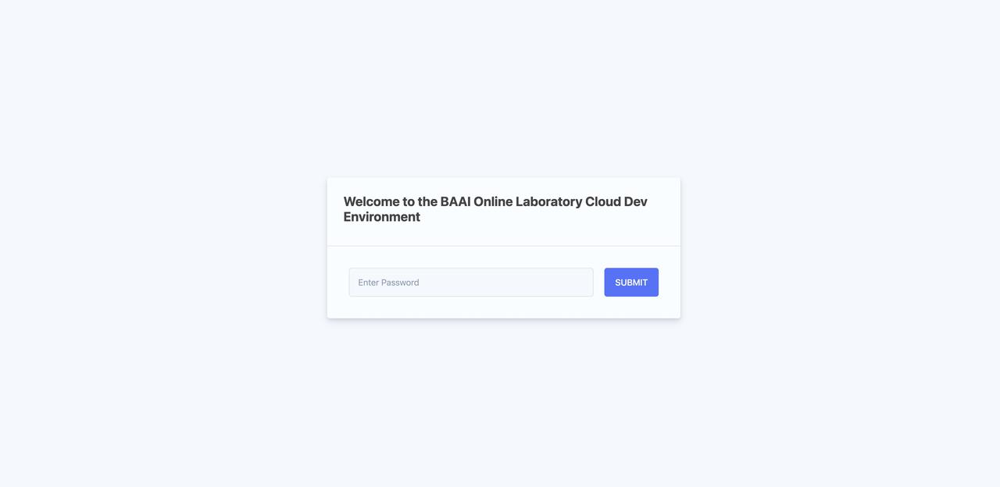
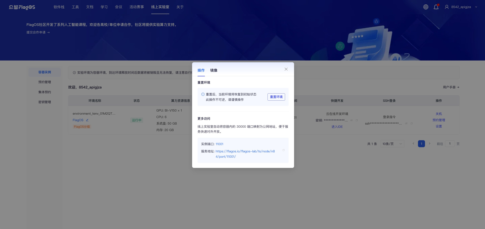
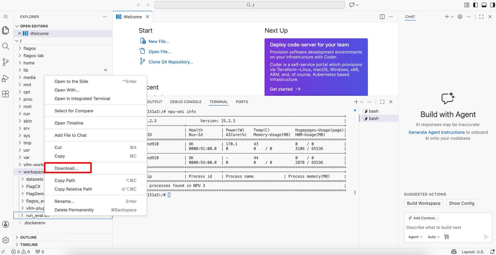
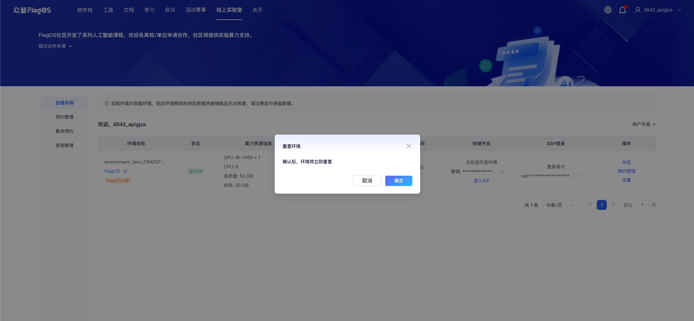

线上实验室用户指南#
快速上手#
在浏览器中打开https://flagos.net/Home。
点击上方的 线上实验室。选择手机号登录或者邮箱登录。输入手机号或者邮箱账号，并点击获取验证码。填入验证码后，勾选接受社区使用协议及隐私协议，点击立即登录/注册。
查看与你账号关联的所有未释放的容器实例、预约信息、访问入口及其他相关信息。

Note
如你的线上实验室左侧菜单中有预约管理菜单，则你的容器实例为预约模式，请关注本指南中的预约模式部分。
如没有该菜单，则容器实例为专属模式，请关注本指南中的专属模式部分。
{kind=link}
1. 预约模式#
预约规则#
为保证平台整体资源利用率，平台将在创建容器实例时分配预约券，后续容器实例将按固定时段预约使用。
平台将固定时段按北京时间划分为：0:00-6:00、6:00-12:00、12:00-18:00、18:00-24:00，每预约一个时段将消耗一张预约券，预约时段内将整段保留。
实例容器将在预约的时段开始时自动预热分配，点击开机即可使用，时段结束后系统将自动保存容器内改动并关机释放。
如在预约时段中未实际使用，预约券不返还。
预约券有类型区分，预约管理菜单中展示和操作的是用户预约券或团队预约券。
在活动开始前 7 日可开始进行容器实例的时段预约，可预约距当前时间 7 日内的时段，可连续预约（中途不关机）。
为保证使用体验，暂不支持实时预约，每一时段的预约截止时间为此时段开始时间的前 15 分钟（例：当日 11:45 后不允许再预约 12:00-18:00 时段）。
用户或团队预约可在时段开始前取消，将返还对应预约券，集体预约不可由普通用户取消。
预约时段结束后系统将自动关机并保存容器内数据（不销毁数据），到达券的释放时间后系统将释放容器并销毁容器内数据，请注意自行保留数据。
预约时段并开启容器实例#
预约模式的容器实例，仅可在预约时间段内进入容器。
在容器实例页面，通过运行时段列查看容器实例的当前及预约时段。
在操作列中，点击预约管理，即可跳转至预约管理页中对应容器实例的预约抽屉，进行运行时段的预约。

选择可预约的一个或多个时段并点击确认后，时段即预约成功，页面将跳转至预约管理页签。
可预约额度列表用来展示容器实例及预约券信息，以及对实例进行预约操作。
当前时间距离活动开始时间超过 7 日时，容器实例不可预约。
当剩余预约券为 0 时，即代表此容器实例的可用额度已用尽，但不影响其他容器实例进行预约。
在预约记录中，普通用户可取消本人自主预约，活动组管理员可取消尚未开始的集体预约。

{kind=link}
Note
如需预约当前时段，请向管理员确认该时段是否可用。如可用，管理员可代你选择该时段。管理员预约的时段将显示在当前预约区域，实例状态将变为运行中。
如集体预约与已预约的用户自主预约发生冲突，系统将自动取消用户预约，并返还对应的用户预约券。
返回容器实例页签，环境容器为关机状态。当预约时段到来时，在操作列中点击开机以启动实例。
2. 专属模式#
在容器实例页面，通过操作列查看镜像信息：
导航至操作，并点击设置
 。
。在弹出的窗口中，点击镜像。

{kind=link}
在线开发环境中的操作#
访问在线开发环境#
在开启实例后，可使用以下任一方式访问云端在线开发环境：
方式一：SSH链接 如需SSH访问开发环境，请按照以下步骤操作：
在您的电脑上创建公钥。
在SSH登录列中，点击前往密钥管理进行配置。
在秘钥管理页面，左上角点击添加公钥。
在添加公钥的对话框中，在SSH公钥中粘贴电脑上创建的公钥并在公钥名称填写公钥名称，点击提交。 您也可以点击编辑或删除来编辑或删除公钥。
方式二：直接访问开发环境 如需直接访问开发环境，请按以下步骤操作：
在快捷开发列中，在密钥 旁点击复制图标
 ，复制密钥。
，复制密钥。点击 进入IDE。在弹出的 Welcome 对话框中粘贴密钥，并点击 Submit。

方式三：通过公网访问 如需通过公网访问开发环境，请按以下步骤操作，可将开发环境的服务映射到端口 30000。
在操作列中，点击设置
。在弹出的悬浮窗口中，点击 操作。在更多访问区域中点击服务地址链接以打开开发环境。

{kind=link}
{kind=link}
查询算力配置#
根据显卡类型，通过终端命令查询算力配置信息。
对于天数加速卡，使用以下命令：
ixsmi

对于华为昇腾加速卡，使用以下命令：
npu-smi info

上传和下载文件#
您可以从本地位置上传文件、下载文件到本地位置，例如代码包等，可通过以下方式：
在
Workspace上点击右键，选择 Upload…
在
Workspace上点击右键，选择 Download…
{kind=link}
Warning
实验环境为容器化环境，在释放后所有数据将被永久删除且无法恢复，请务必提前在本地备份数据。
关于 Visual Studio Code 的详细使用说明，请参阅：https://code.visualstudio.com/docs。
环境重置#
要将开发环境重置为初始状态，请执行以下步骤：
导航至操作列，并点击设置
。在弹出的窗口中，点击操作。在重置环境部分，点击重置环境。在重置环境弹出窗口中，点击确定。

{kind=link}
Warning
此操作不可逆，请谨慎操作。 在环境重置后所有数据将永久删除且无法恢复，请务必提前在本地备份数据。